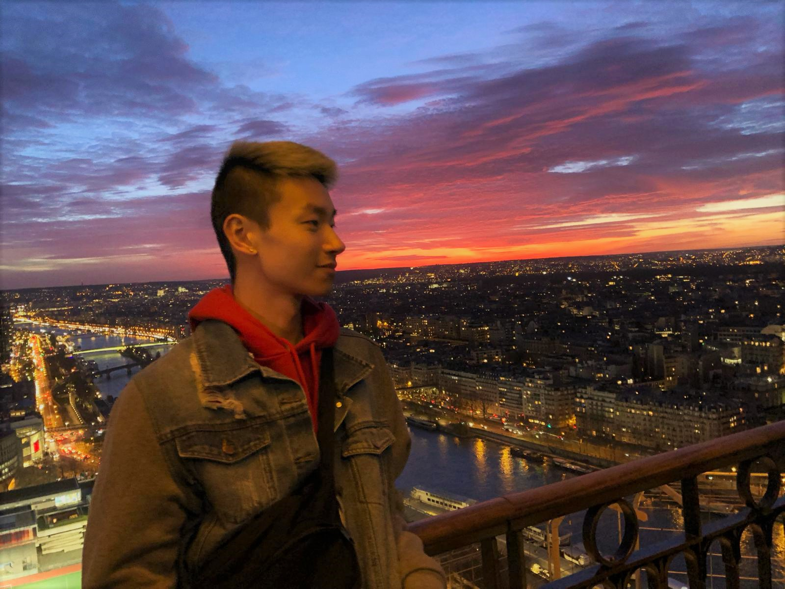
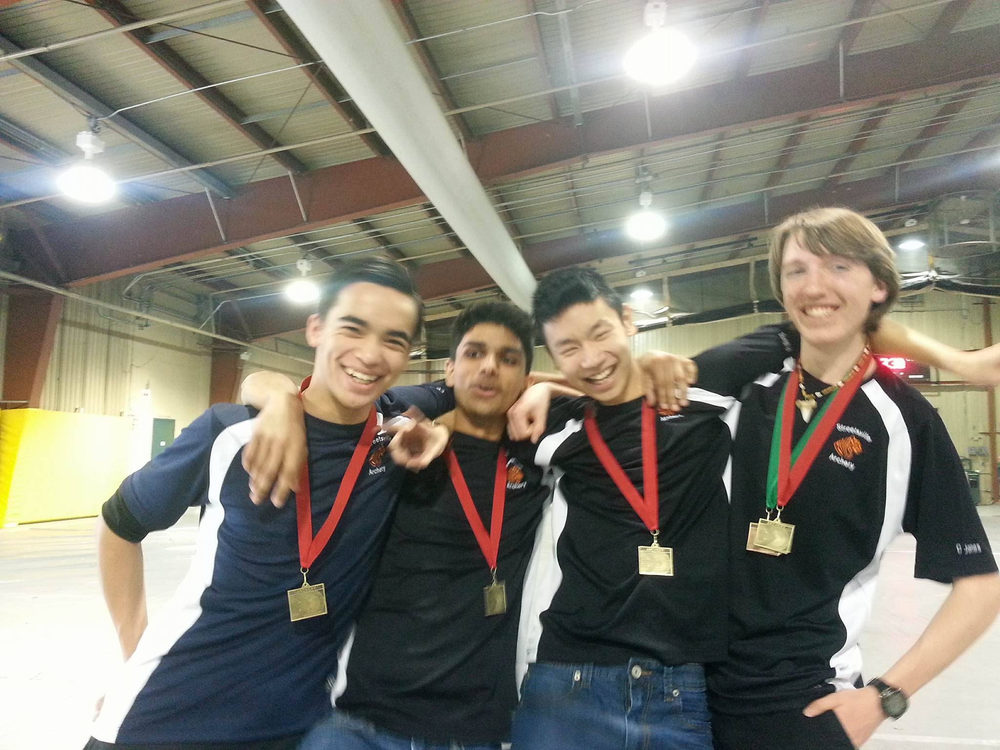

I'm Rosario Wong, a GTA-based art student, currently attending University of Toronto - Mississauga and Sheridan College, double majoring in Art and Art History (A&AH), and Communications, Culture, and Information Technology (CCiT) and minoring in math.
My artworks range from Photoshop edits to digital paintings to traditional mediums to print making. While my personal art leans towards random ideas that I think of, the prints for Print Media has been surrounding the topic of showing appreciation for those around me.
While I grew up constantly drawing, I didn't take it seriously nor thought about jumping into a future surrounding the arts. I thought about becoming a chef, to becoming a baker, graduating high school and going into architecture, had a sudden urge to go into graphic design, but realized that art was really what I enjoyed, as well as teaching.
Upon realizing that the original second major was not going to work out, I researched about the CCiT major, discovering plentiful different design/art-related courses. This discovery made me realize that my interest not only involves illustration-based arts, but as well as graphic design and web/UI/UX design.

Now, you may ask yourself... "why is Rosario minoring in math?". The answer is just simply because I grew up doing math, and going to math tutors, so it just feels weird not to be doing some sort of math while in school. Also, to be a high school teacher, we are required to have two teachable subjects.
Art and math are not the only things I enjoy to do. My interests and hobbies include: archery, volleyball, Ultimate Frisbee, skating, jogging, nature walks, going out to eat, baking cakes, breads, pastries and desserts, and honestly just spending time with my friends.
Everyone has a little dream, but my dream is a little bit wack (haha). I want to become a teacher, coaching an archery and Ultimate Frisbee team, while being a freelance artist, AND be the owner of a little cafe where I can sell the things I like to bake.